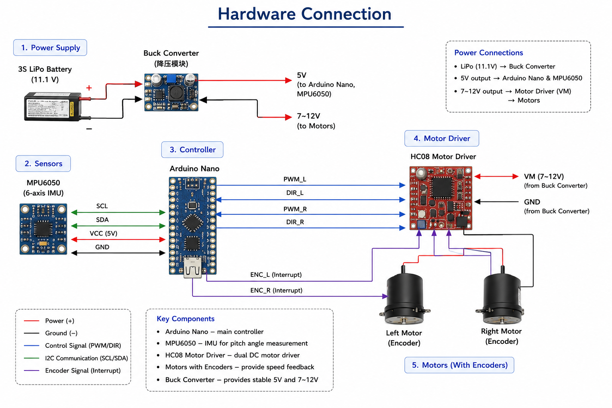
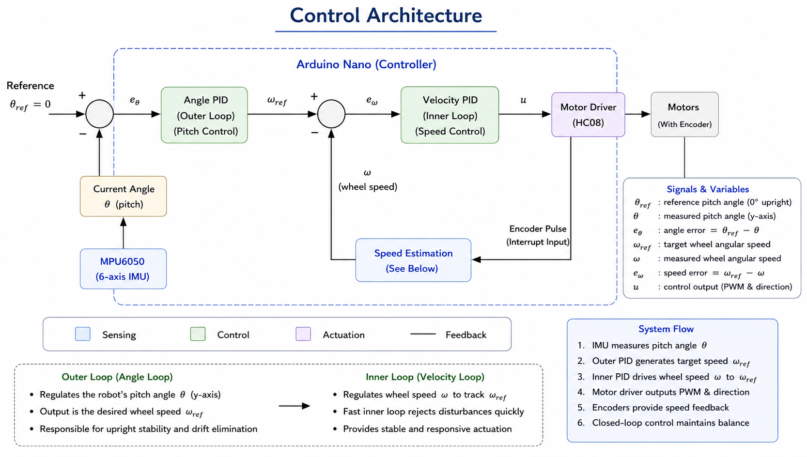
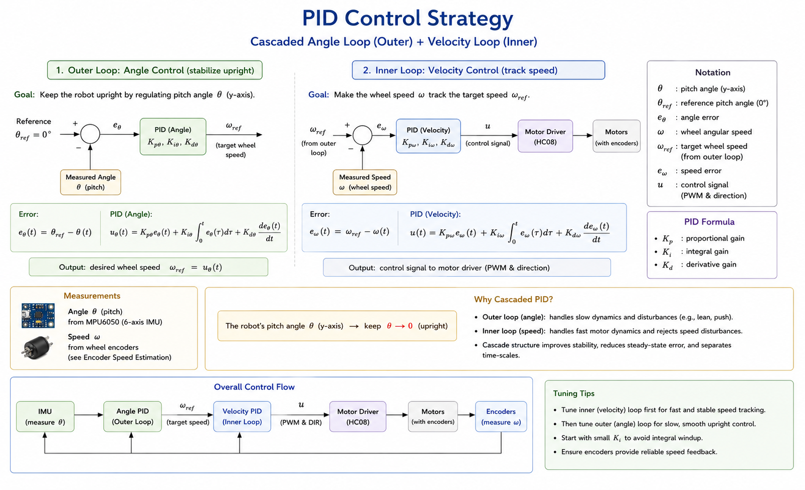
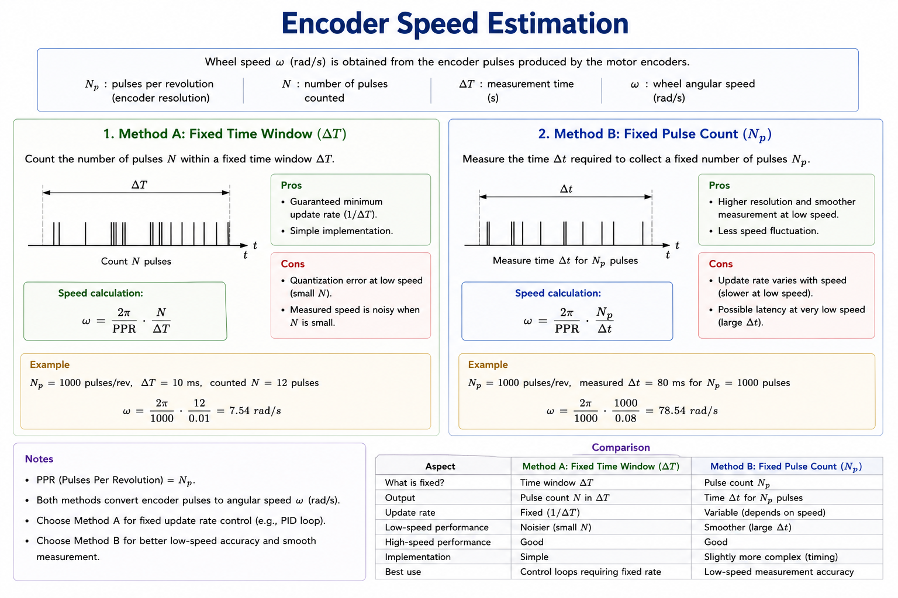
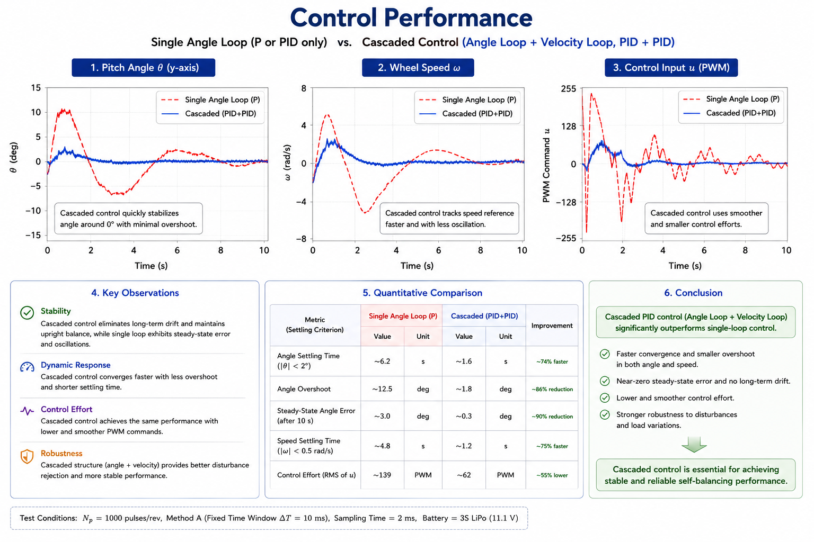

A two-wheeled self-balancing robot built end-to-end — from hardware to real-time cascaded PID control that keeps it standing upright.
This project implements a two-wheeled self-balancing robot using an advanced (cascaded) PID control policy. The robot estimates its body angle and continuously adjusts motor output to maintain balance, forming a closed-loop control system similar to the basic principle behind Segway-like robots.
It combines hardware integration, sensor feedback, real-time control, and parameter tuning — demonstrating how classical control methods can stabilize an inherently unstable physical system, and laying a foundation for more advanced topics such as state feedback, trajectory tracking, and model-based control.
Power regulation, sensors, controller, motor driver, and encoder-equipped motors.

Cascaded loops: an outer angle (pitch) loop feeding an inner velocity loop.

Angle loop stabilizes the robot upright; velocity loop tracks the target wheel speed.

Two interrupt-driven methods — fixed time window vs. fixed pulse count — with a trade-off comparison.

Single angle loop vs. cascaded control — angle, wheel speed, and control effort.

Live demo — the robot recovering and holding balance in real time.